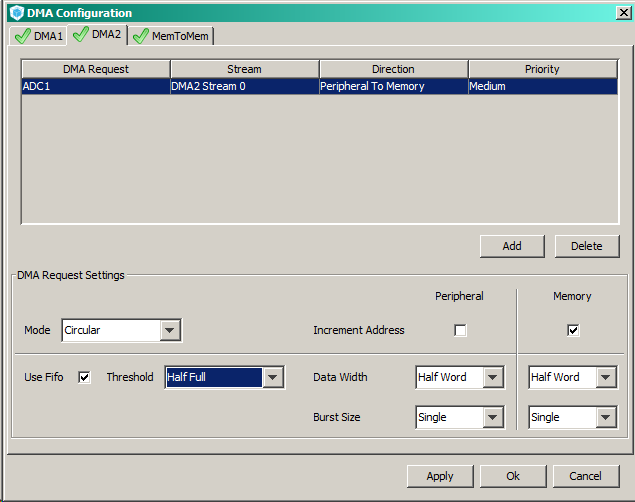
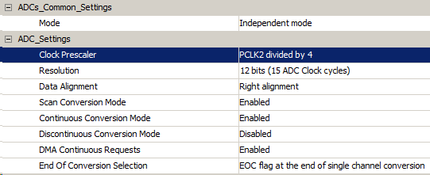
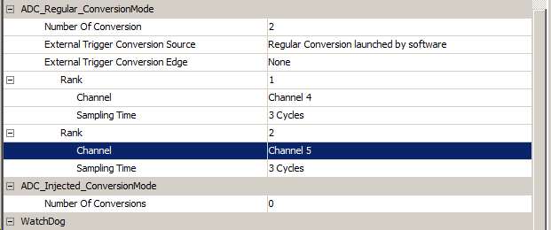
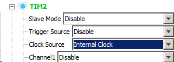
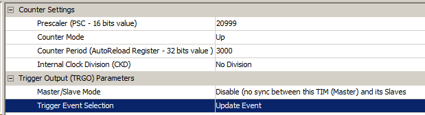
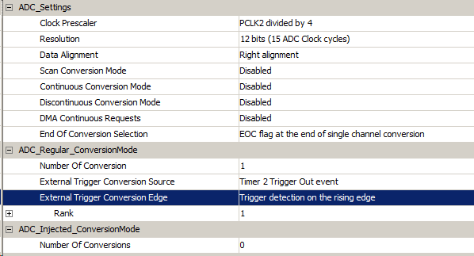

Выбираем ADC преобразователь, не конфликтующий с используемой перефирией. В момем случае ADC1, IN4 на пине PA4.
Все 3 ADC висят на шине тактирования APB2.
Включаем прерывание в настройках. Генерируем код.
На пин А4 подключаем среднюю точку от делителя напряжения, чтобы снимать хоть какие-то показания.
В main нам понадобится функция выделения цифр из разрядов с 1-го по 4-й:
/* USER CODE BEGIN 4 */
uint8_t getDigit(uint16_t number, uint16_t exp)
{
if(exp == 100)
number %= 1000;
else if(exp == 10)
number %= 100;
else if(exp == 1)
return number %= 10;
return number / exp;
}
/* USER CODE END 4 */
Не забываем прототип:
/* Private function prototypes -----------------------------------------------*/
uint8_t getDigit(uint16_t, uint16_t);
/* USER CODE END PFP */
Инициализируемся:
/* USER CODE BEGIN 1 */
float adcResult = 0;
/* USER CODE END 1 */
/* USER CODE BEGIN 2 */
lcdInit();
/* USER CODE END 2 */
Согласно мануалу, работа с ADC должна выполняться в следующем порядке...
1. Запускаем преобразователь:
HAL_ADC_Start(&hadc);
2. Конвертируем показания:
HAL_ADC_PollForConversion(&hadc, timeout);
3. Забираем результат:
HAL_ADC_GetValue(&hadc);
4. Останавливаем преобразователь:
HAL_ADC_Stop(&hadc1);
Все это используем в программе.
/* USER CODE BEGIN WHILE */
while (1)
{
/* USER CODE END WHILE */
/* USER CODE BEGIN 3 */
HAL_ADC_Start(&hadc1); //start ADC
HAL_ADC_PollForConversion(&hadc1, 100); //waiting for convertings end
adcResult = (float)HAL_ADC_GetValue(&hadc1);
//формула вымучена каким-то неведомым способом:
adcResult = (adcResult * 3) / 4096; // converting
HAL_ADC_Stop(&hadc1);
lcdSendCmnd(0x01);
lcdSendCmnd(0x02);
{
uint8_t value = adcResult; // забираем целую часть
uint16_t reminder = adcResult * 1000; // приводим дробную к целой
lcdSendData(getDigit(value, 1)); // выводим целую часть
lcdSendCode(0x2E); // точка
lcdSendData(getDigit(reminder, 100)); // выводим дробную часть
lcdSendData(getDigit(reminder, 10));
//lcdSendData(getDigit(reminder, 1));
lcdSendCode(0x76); // V - вольты
}
HAL_Delay(1000);
}
/* USER CODE END 3 */
РАБОТА С АЦП ЧЕРЕЗ ПРЕРЫВАНИЕ
Для работы через прерывание потребуется вместо HAL_ADC_Start(&hadc1) вызывать соответствующую функцию - HAL_ADC_Start_IT(&hadc1);
Далее необходимо написать функцию, в которую будет забрасывать по прерыванию после завершения конвертации значения. В документации HAL она выглядит следующим образом:
void HAL_ADC_ConvCpltCallback(ADC_HandleTypeDef* hadc1);
Ее необходимо написать самостоятельно, не забыв о прототипе:
/* Private function prototypes -----------------------------------------------*/
uint8_t getDigit(uint16_t, uint16_t);
void HAL_ADC_ConvCpltCallback(ADC_HandleTypeDef* hadc1);
/* USER CODE END PFP */
/* USER CODE BEGIN 4 */
void HAL_ADC_ConvCpltCallback(ADC_HandleTypeDef* hadc1)
{
adc_data = HAL_ADC_GetValue(hadc1);
// следующая функция может быть удалена,
// если выставлен параметр
// Continuous Conversion mode - Enable
// При этом, возможно, придется увеличить
// делитель АЦП.
HAL_ADC_Start_IT(hadc1);
}
/* USER CODE END 4 */
После того, как АЦП отработал, он автоматически отключается, поэтому необходимо его включать вручную в обработчике прерывания или в цикле при необходимости.
Как сказано в комментарии в коде выше, от ручного запуска АЦП можно отказаться, выставив параметр Continuous Conversion mode - Enable в Кубе. Но при этом упадет производительность, что, возможно, потребует либо уменьшить частоту на APB1, либо увеличить предделитель самого АЦП.
Поскольку мы забираем значение в прерывании, нам потребуется глобальная переменная:
uint16_t adc_data;
Рабочий цикл выглядит следующим образом:
HAL_ADC_Start_IT(&hadc1);
while(1)
{
lcdSendCmnd(0x01);
lcdSendCmnd(0x02);
float result = (float)adc_data * 3 / 4096;
uint16_t value = result;
uint16_t reminder = result * 1000;
lcdSendData(getDigit(value, 1));
lcdSendCode(0x2E);
lcdSendData(getDigit(reminder, 100));
lcdSendData(getDigit(reminder, 10));
HAL_Delay(1000);
}
ADC DMA
Попробуем реализовать работу нескольких АЦП через DMA.
В кубе к имеющемуся ADC1_IN4 подключаем ADC_IN5. Заходим в настройки DMA и выставляем:

Заходим в настройки АЦП. Прерывания по ADC можно отключить, прерывания по DMA остаются активными.
Поскольку мы используем несколько каналов, включаем Scan Convertion Mode, Continuous Convertion Mode и DMA Continuous Requests.

Выставляем кол-во каналов, равное 2 и распределяем их (Channel 1 и Channel 2 для второго).

Сохраняем и генерируемся.
ADC REGULAR WITH TRIGGER
В данном режиме АЦП запускается по таймеру.
Включаем таймер с внутренним тактированием:

Смотрим тактирование на APB1 (от него тактируется таймер 2). В нашем случае это 21МГц.
В настройках таймера устанавливаем предделитель 20999 (поскольку счет идет от 0) и счетчик равный 1000. Таким образом прерывание будет срабатывать каждую секунду. Устанавливаем Update Event.

Прерывания от АЦП можно отключить. При этом настраивается срабатывание тригера:

Генерируем проект.
HAL_TIM_Base_Start_IT(&htim2);
HAL_ADC_Start(&hadc1);
while(1) {
uint16_t adcResult = HAL_ADC_GetValue(&hadc1);
…
}
//4
void HAL_TIM_PeriodElapsedCallback(TIM_HandleTypeDef *htim2)
{
//Обработчик прерывания.
}
//4 END
АЦП самостоятельно по прерыванию выполняет преобразование. Нам же остается только получать эти значения в цикле с помощью функции HAL_ADC_GetValue().